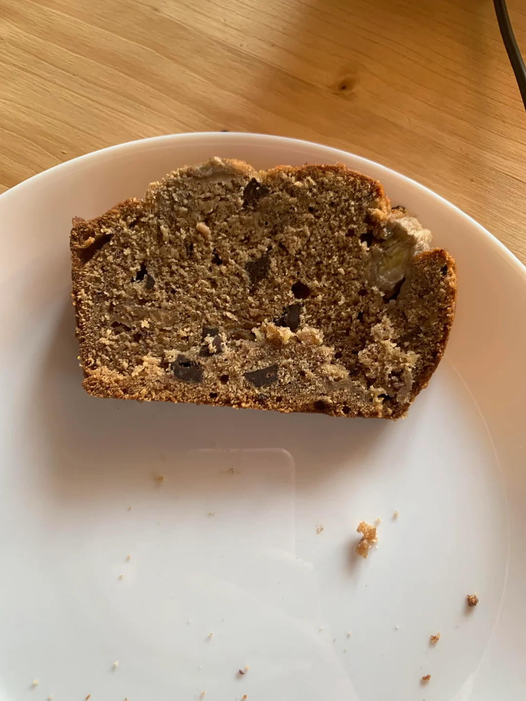

Classic Banana Bread
This quick & easy banana bread recipe tastes
delicious and is just like my mom’s old-fashioned
classic banana bread.
Perfect for breakfast, dessert, or a snack!

Recipe Information
Preparation time: 10–15 minutes
Cooking time: 65–70 minutes
Number of Servings: 12 slices
Difficulty level: Beginner
Ingredients
- 1 1/2 cups mashed ripe bananas (about 3 large bananas)
- 8 tbsp unsalted butter, softened
- 2 large eggs
-
1 cup white granulated sugar (or 1/2 cup brown sugar + 1/2 cup white
sugar)
- 2 cups all-purpose flour
- 1 tsp vanilla extract
- 1 tsp baking soda
- 1 tsp baking powder
- 1/2 tsp salt
- Optional: 1 cup chocolate chips, blueberries, or chopped nuts
- Optional: 1 tsp ground cinnamon
Instructions
- Preheat oven to 325°F (163°C).
- Mash bananas with a fork until smooth.
-
Slice and soften the butter, then mix with bananas, eggs, and sugar in
a large bowl until blended.
- Add remaining ingredients and stir until fully mixed.
-
Optional: Fold in 1 cup of your favorite add-in (e.g., chocolate
chips).
- Pour batter into a nonstick bread pan and smooth the top.
- Bake for 65–70 minutes.
-
Cool in the pan for 10 minutes before transferring to a wire rack.
- Allow to cool completely before slicing and serving.
Helpful Tips
Use ripe bananas with plenty of brown spots for the best flavor. Unripe
bananas will make your bread taste bland and less sweet.
Nutrition Facts (per slice)

| Nutrient |
Amount |
| Calories |
245 |
| Carbohydrates |
39g |
| Saturated Fat |
5g |
| Cholesterol |
47mg |
| Sodium |
236mg |
| Potassium |
141g |
| Dietary Fiber |
1g |
| Sugar |
20g |
| Protein |
3g |